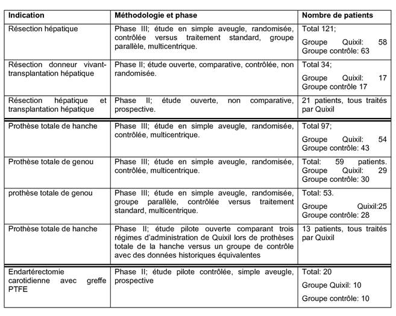
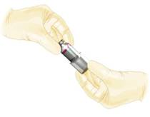
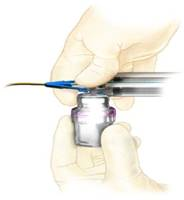
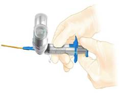
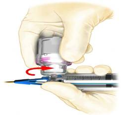
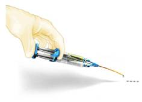
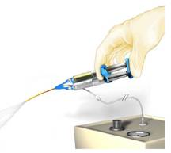

RÉSUMÉ DES CARACTÉRISTIQUES DU PRODUIT
ANSM - Mis à jour le : 17/03/2011
QUIXIL, solution pour colle
2. COMPOSITION QUALITATIVE ET QUANTITATIVE
Les substances actives sont les suivantes:
|
|
Solution 1ml |
Solution 2ml |
Solution 5ml |
|
|
Composant 1 (BAC) |
|
|
|
|
|
Protéines* humaines coagulables contenant principalement du fibrinogène et de la fibronectine |
40 - 60 mg |
80 - 120 mg |
200 - 300 mg |
|
|
Acide tranexamique |
85 - 105 mg |
170 - 210 mg |
425-525 mg |
|
|
Composant 2 (Thrombine) |
|
|
|
|
|
Thrombine humaine |
800 - 1200 IU |
1 600 - 2400 IU |
4000 - 6000 IU |
|
|
Chlorure de calcium |
5,6 - 6,2 mg |
11,2 - 12,4 mg |
28 - 31 mg |
*quantité totale de protéines 60 - 80 mg/ml
Pour la liste complète des excipients, voir rubrique 6.1.
Solution pour colle.
4.1. Indications thérapeutiques
QUIXIL est indiqué comme traitement d'appoint pour améliorer l'hémostase quand les techniques conventionnelles sont insuffisantes.
L'efficacité a été démontrée en chirurgie hépatique et en chirurgie orthopédique (cf. paragraphe 5.1.).
4.2. Posologie et mode d'administration
L'utilisation de QUIXIL est réservée aux chirurgiens expérimentés.
Posologie
La quantité de QUIXIL à appliquer et la fréquence d'application doivent toujours être adaptées au besoin clinique sous-jacent du patient.
La quantité à appliquer dépend de divers facteurs dont le type d'intervention chirurgicale, l'étendue de la surface à traiter, le mode d'application et le nombre d'applications.
L'application du produit doit être individualisée par le chirurgien. Lors des essais cliniques, les dosages se sont habituellement situés entre 5 et 10 ml du produit reconstitué. Pour certaines indications (par ex. les traumatismes hépatiques ou le traitement de larges surfaces brûlées) des quantités plus importantes peuvent être nécessaires.
La quantité initiale de produit à appliquer sur un site anatomique ou sur une surface cible doit être suffisante pour couvrir entièrement le site d'application. L'application peut être répétée si nécessaire.
QUIXIL doit être appliqué goutte à goutte ou vaporisé sur les tissus par petites quantités (0,1 - 0,2 ml) afin de favoriser la formation d'une couche fine homogène. Dans le cas où le site destiné à l'application de QUIXIL ne peut pas être atteint avec l'embout standard, il est possible de choisir d'utiliser un embout long marqué CE proposé en complément du kit de QUIXIL. Les instructions d'utilisation de cet accessoire sont jointes à son conditionnement.
La dose maximale recommandée est de 20 ml du produit reconstitué chez les adultes, 10 ml chez les enfants et 5 ml chez les nourrissons.
En chirurgie orthopédique, nous ne disposons pas de suffisamment de données pour recommander l'usage de QUIXIL chez des patients de moins de 18 ans.
Mode d'administration
Pour application épilésionelle.
Préparer les solutions comme décrit dans le paragraphe 6.6. Avant l'application, la surface lésée doit être aussi sèche que possible. Cf. paragraphe 6.6 pour des instructions plus détaillées.
· QUIXIL ne doit pas être utilisé en intravasculaire.
· Hypersensibilité aux substances actives ou à l'un des excipients.
· Les produits contenant de l'acide tranexamique ne doivent pas être utilisés en neurochirurgie ou toute intervention chirurgicale au cours de laquelle un contact avec le liquide céphalo-rachidien ou la dure-mère peut se produire (par ex. otologie, rhinologie, ophtalmologie et chirurgie vertébrale), ceci en raison d'un risque de toxicité cérébrale neurologique (tels que œdème et convulsion) potentiellement fatale.
4.4. Mises en garde spéciales et précautions d'emploi
· Pour application épilésionelle uniquement. Ne pas utiliser en intravasculaire.
· Des données adéquates ne sont pas disponibles pour recommander l'utilisation de ce produit dans les cas de collage de tissus, d'application par endoscopie pour le traitement de saignements ou d'anastomoses gastro-intestinales.
· Des complications thrombo-emboliques mettant le pronostic vital en jeu peuvent se produire si le produit est involontairement utilisé en intravasculaire.
· Des embolies gazeuses se sont produites lors de la vaporisation de QUIXIL au moyen d'un régulateur de pression. Ce phénomène semble lié à l'utilisation du régulateur de pression à des pressions supérieures aux pressions recommandées et/ou à la proximité étroite de la surface des tissus. En cas de vaporisation de QUIXIL à l'aide d'un régulateur de pression, veiller à maintenir la pression dans l'intervalle recommandé par le fabricant du dispositif d'application. En l'absence d'une recommandation spécifique, la pression ne doit pas être supérieure à 2,0-2,5 bars. QUIXIL ne doit pas être vaporisé à une distance inférieure à celle recommandée par le fabricant du dispositif d'application. En l'absence d'une recommandation spécifique, QUIXIL ne doit pas être vaporisé à moins de 10-15 cm de la surface des tissus. Lors de la vaporisation de QUIXIL, les modifications de pression sanguine, de fréquence cardiaque, de saturation en oxygène et de CO2 télé-expiratoire doivent être étroitement surveillées en raison du risque de survenue d'une embolie gazeuse.
En cas d'utilisation d'un accessoire d'extrémité ajouté au dispositif d'application du produit, les instructions d'utilisation de l'accessoire d'extrémité doivent être respectées.
· Avant d'administrer QUIXIL, s'assurer que les parties du corps hors de la zone d'application sont suffisamment protégées (couvertes) afin d'éviter toute adhésion de tissus hors de la zone souhaitée.
· Comme pour tout produit d'origine protéique, des réactions allergiques d'hypersensibilité sont possibles. Les signes de réaction d'hypersensibilité comprennent urticaire, urticaire généralisée, oppression thoracique, respiration sifflante, hypotension et anaphylaxie. Si ces symptômes apparaissent, l'administration doit être interrompue immédiatement.
· En cas de choc, les traitements médicaux habituels seront appliqués.
· Les mesures habituelles visant à prévenir les infections résultant de l'utilisation de médicaments préparés à partir de sang ou plasma humain comportent la sélection des donneurs, le dépistage de marqueurs spécifiques d'infections dans les dons individuels et les pools de plasma et l'inclusion d'étapes de fabrication efficaces pour l'inactivation/élimination des virus. Cependant, lors d'administrations de médicaments préparés à partir de sang ou de plasma humain, le risque de transmission d'agents infectieux ne peut être totalement exclu. Ceci s'applique aussi à des virus inconnus ou nouvellement apparus ou d'autres agents pathogènes. Les mesures prises sont considérées efficaces pour les virus enveloppés tels que HIV, HBV et HCV.
Les mesures prises ont une efficacité limitée vis-à-vis des virus non-enveloppés, comme le HAV et le parvovirus B19.
Une infection par parvovirus B19 peut être grave pour la femme enceinte (infection fœtale) et pour les individus présentant une immunodéficience ou une érythropoïèse augmentée (p.ex. anémie hémolytique).
Il est fortement recommandé, chaque fois que QUIXIL est utilisé chez un patient, de noter le nom et le numéro de lot du produit de façon à maintenir un lien entre le patient et le lot de produit utilisé.
4.5. Interactions avec d'autres médicaments et autres formes d'interactions
Aucune étude formelle d'interaction n'a été réalisée. De même que les produits comparables ou les solutions de thrombine, la colle peut être dénaturée par l'exposition à des solutions contenant de l'alcool, de l'iode ou des métaux lourds (par ex. solutions antiseptiques.) Ces substances doivent être éliminées au maximum avant d'appliquer la colle.
La sécurité d'utilisation des colles chirurgicales et des produits hémostatiques au cours de la grossesse ou de l'allaitement n'a pas été établie par des essais cliniques contrôlés. Les études expérimentales sur l'animal sont insuffisantes pour évaluer leur sécurité en ce qui concerne la reproduction, le développement de l'embryon ou du fœtus, le déroulement de la grossesse et le développement péri- et post-natal. Dès lors, Quixil ne sera administré aux femmes enceintes ou qui allaitent qu'en cas d'absolue nécessité.
4.7. Effets sur l'aptitude à conduire des véhicules et à utiliser des machines
Sans objet.
De l'hypersensibilité ou des réactions allergiques (telles que angio-œdème, sensation de brûlure et picotements sur le site d'application, bronchospasme, frissons, bouffées de chaleur, urticaire généralisée, céphalées, urticaire, hypotension, léthargie, nausées, agitation, tachycardie, oppression thoracique, fourmillements, vomissements, respiration sifflante) peuvent apparaître dans de rares cas chez des patients traités avec des colles chirurgicales ou des produits hémostatiques. Dans des cas isolés, ces réactions ont évolué vers une anaphylaxie sévère. De telles réactions peuvent être observées en particulier si la préparation est appliquée de manière répétée ou administrée chez des patients connus pour leur hypersensibilité aux constituants du produit.
Des anticorps contre les composants des colles chirurgicales/hémostatiques peuvent apparaître en de rares occasions.
Des complications thrombo-emboliques et CIVD peuvent se présenter si la préparation est utilisée involontairement en intravasculaire. Il existe aussi un risque de réaction anaphylactique (cf. rubrique 4.4.)
Pour la sécurité en matière d'agents transmissibles cf. rubrique 4.4.
Aucun cas de surdosage n'a été rapporté.
5. PROPRIETES PHARMACOLOGIQUES
5.1. Propriétés pharmacodynamiques
Classe pharmacothérapeutique: hémostatiques locaux, Code ATC: B02BC.
Le système d'adhésion de la fibrine initie la phase finale de la coagulation sanguine. La transformation du fibrinogène en fibrine se produit lorsque le fibrinogène se divise en monomères de fibrine et en fibrinopeptides. Les monomères de fibrine s'assemblent et forment un caillot de fibrine. Le Facteur XIIIa, qui est une forme activée par la thrombine du Facteur XIII, stabilise la fibrine. La transformation du fibrinogène et la stabilisation de la fibrine nécessitent des ions de calcium.
Au fur et à mesure de la cicatrisation, l'activité fibrinolytique s'intensifie sous l'effet de la plasmine et le processus de décomposition de la fibrine en produits de dégradation est initié. La dégradation protéolytique de la fibrine est inhibée par l'acide tranexamique.
Des études cliniques démontrant l'hémostase et la fermeture tissulaire ont été réalisées en chirurgie hépatique (résection et transplantation hépatiques) et en chirurgie orthopédique (prothèse totale de hanche et prothèse totale de genou). De plus, une étude de Phase II a été réalisée en chirurgie vasculaire (endartérectomie carotidienne). Le tableau suivant résume les méthodologies des études cliniques ainsi que le nombre de patients inclus:
Les essais cliniques en chirurgie hépatique ont inclus 8 patients pédiatriques dont 5 âgés de moins de deux ans au moment des essais. Lors d'une étude clinique chez 59 patients ayant subi une prothèse totale du genou, Quixil était efficace pour l'hémostase chez les patients traités par héparine de faible poids moléculaire avant l'opération.
5.2. Propriétés pharmacocinétiques
QUIXIL est destiné à un usage épilesionel uniquement. L'administration intravasculaire est contre-indiquée. En conséquence, aucune étude pharmacocinétique par voie intravasculaire n'a été réalisée chez l'homme.
Des études ont été effectuées chez le lapin afin d'évaluer l'absorption et l'élimination de la Thrombine et de l'acide tranexamique (antifibrinolytique synthétique utilisé comme stabilisant du BAC) par application sur section de foie après hépatectomie partielle. L'utilisation de 125I-thrombin a démontré une lente absorption de peptides biologiquement inactifs provenant de la dégradation de la thrombine, avec un Cmax plasmatique apparaissant après 6-8 heures, et ne représentant que 1 à 2 % de la dose appliquée. Une étude similaire avec de l'acide 3H-tranexamique a démontré que ce stabilisant était très rapidement absorbé; le Tmax se situant dans la plupart des cas entre 0.2 et 2 heures. L'élimination dans le plasma était totale 10 heures après application.
Le niveau plasmatique d'acide tranexamique résultant de l'absorption de Quixil peut provoquer un effet antifibrinolytique systémique. Cependant, l'acide tranexamique est rapidement excrété.
Les colles chirurgicales et produits hémostatiques sont métabolisés de la même manière que la fibrine endogène par fibrinolyse et phagocytose.
5.3. Données de sécurité préclinique
QUIXIL a été classé comme non-irritant suite au Test d'Irritation Cutanée Primaire, et légèrement irritant après le Test d'Irritation Oculaire. Le Test d'Ames sur le BAC et la Thrombine n'a pas révélé l'induction d'effets mutagènes.
Après application locale, l'absorption de la thrombine dans le plasma est lente et consiste principalement en produits de dégradation qui sont éliminés.
Aucun effet toxicologique dû au solvant et au détergent (TnBP et Triton X-100) utilisés en cours d'étape d'inactivation virale n'est attendu, puisque les niveaux résiduels sont inférieurs à 5 µg/ml.
Des études effectuées sur le lapin, ont montré qu'un des constituants du Quixil, l'acide tranexamique, peut induire une neurotoxicité (lésions œdémateuses spongieuses) lorsqu'il est appliqué directement sur la dure-mère ou dans le liquide céphalo-rachidien. Il n'existe aucune dose sans effets nocifs.
Chlorhydrate d'arginine
Glycine
Chlorure de sodium
Citrate de sodium
Chlorure de calcium
Eau pour préparations injectables
Solution de Thrombine:
Albumine humaine
Mannitol
Acétate de sodium
Eau pour préparations injectables
Ce médicament ne doit pas être mélangé avec d'autres médicaments et doit toujours être appliqué avec le dispositif d'application fourni.
2 ans.
6.4. Précautions particulières de conservation
A conserver à une température ne dépassant pas -18°C. Conserver les flacons dans leur emballage extérieur à l'abri de la lumière. Ne pas recongeler.
Après décongélation, les flacons non ouverts peuvent être conservés entre 2°C et 8°C, à l'abri de la lumière jusqu'à 30 jours.
Lorsque les composants BAC et Thrombine ont été prélevés dans le dispositif d'administration, ils doivent être utilisés immédiatement.
6.5. Nature et contenu de l'emballage extérieur
QUIXIL consiste en un emballage contenant 2 flacons séparés (verre de type I) muni d'un bouchon en caoutchouc (type I) chacun contenant 1ml, 2 ml, 5 ml de solution (BAC et Thrombine respectivement) et un emballage contenant le dispositif d'application.
L'emballage du dispositif d'application marqué CE contient un applicateur stérile à usage unique muni de deux seringues placé dans un plateau en PVC transparent scellé par un papier Tyvek pelable. Ce plateau scellé est emballé dans une coque en polyéthylène/papier et placé dans une boîte en carton.
6.6. Précautions particulières d’élimination et de manipulation
Tout produit non utilisé ou déchet doit être éliminé conformément à la réglementation locale en vigueur.
Manipulation
Décongélation
Les flacons doivent être décongelés de l'une des façons suivantes:
à 2°C et 8°C (réfrigérateur): les flacons sont décongelés dans la journée, ou
à 20°C et 25°C (température ambiante): les flacons sont décongelés dans l'heure, ou
à 37°C (par ex. bain d'eau en utilisant des techniques aseptiques ou en réchauffant les flacons dans les mains): les flacons sont décongelés dans les 10 minutes et ne doivent pas être conservés à 37°C plus de 90 minutes.
Préparation (cf. Figure 1)
L'emballage du dispositif d'application contient un dispositif spécialement conçu pour appliquer le produit et un tube muni d'un filtre bactériologique de 0.2 µm utilisé pour fournir du gaz pressurisé au dispositif afin de transformer QUIXIL en aérosol lorsqu'administré par pulvérisation. Les dispositifs d'application sont stériles tant que l'emballage n'est ni ouvert, ni endommagé et doivent être utilisés en une seule fois. La préparation de QUIXIL ne nécessite pas l'utilisation d'aiguilles. Une notice détaillant les instructions d'utilisation de QUIXIL conjointement avec le dispositif d'application est fournie avec l'emballage du dispositif d'application.
Aspirer le contenu des deux flacons dans le dispositif d'administration, en suivant les instructions en Figure 1.
Les deux seringues doivent contenir le même volume, et ne doivent pas contenir de bulles d'air.
Application au goutte à goutte
En maintenant le bout de l'applicateur le plus près possible de la surface de tissu à traiter, sans pour autant toucher le tissu, appliquer au goutte à goutte sur la surface à traiter. Les gouttes doivent être bien séparées les unes des autres lorsqu'elles sortent de l'applicateur. Si le bout de l'applicateur est bouché, le bout du cathéter peut être coupé d'un demi-centimètre (0.5 cm.)
Application par pulvérisation
QUIXIL peut être pulvérisé à l'aide de CO2 sous pression ou d'air comprimé.
Connecter le tube court du dispositif d'application sur la prise mâle luer-lock du long tube de raccordement au gaz. Connecter la prise femelle luer-lock du tube de raccordement au gaz (muni de son filtre bactériostatique) à un régulateur de pression capable de délivrer une pression comprise entre 2 et 2,5 bars. Le régulateur de pression doit être utilisé conformément aux instructions du fabricant. Une pression de 2 à 2,5 bars (mesurée par le débit de gaz) ne doit pas être dépassée.
La distance entre l'embout et la surface du tissu ne doit pas être inférieure à 10-15 cm. Le produit doit être alors pulvérisé sur la surface du tissu par petits jets consécutifs (0,1 à 0,2 ml) de façon à former une couche fine uniforme. QUIXIL forme une couche fine transparente couvrant la surface d'application.
Lors de la pulvérisation de QUIXIL, les modifications de pression sanguine, de fréquence cardiaque, de saturation en oxygène et de CO2 télé-expiratoire doivent être étroitement surveillées en raison du risque de survenue d'une embolie gazeuse.
La solution doit être claire ou légèrement opalescente. Ne pas utiliser de solutions troubles ou contenant des dépôts.
Figure 1. Instructions d'utilisation du dispositif d'application
Maintenir le système porte-seringue d'une main, et vérifier les pistons des seringues en les faisant glisser d'arrière en avant.
|
 |
 |
|
|
1. Insérer les deux flacons (BAC et Thrombine) dans les deux coupelles stériles. Ces coupelles doivent être manipulées stérilement. |
2. En tenant la coupelle du flacon, appuyer le haut du flacon au connecteur attaché à l'applicateur (voir ci-dessus). Répéter avec le second flacon. |
|
|
 |
 |
|
|
3. En tenant le corps de la seringue avec 1 main, aspirer lentement et simultanément le contenu des deux flacons (flacons au dessus). Si nécessaire, réinjecter les solutions dans le flacon et aspirer de nouveau pour évacuer l'air. |
4. Toujours en tenant le corps de la seringue avec une main, faire pivoter le connecteur doucement avec l'autre main, dans le sens inverse des aiguilles d'une montre. L'ensemble connecteur/flacon/coupelle se déconnecte de façon automatique après rotation. |
|
|
 |
 |
|
|
5. En cas de pulvérisation, connecter la tubulure au régulateur de pression. L'applicateur est alors prêt à l'emploi. |
|
|
7. TITULAIRE DE L’AUTORISATION DE MISE SUR LE MARCHE
OMRIX BIOPHARMACEUTICALS SA
CHAUSSEE DE WATERLOO 200
1640 RHODE-ST-GENESE
BELGIQUE
8. NUMERO(S) D’AUTORISATION DE MISE SUR LE MARCHE
· 565 092-6: 1 ml de solution BAC en flacon (verre Type I) muni d'un bouchon en caoutchouc + 1ml de solution Thrombine en flacon (verre Type I) muni d'un bouchon en caoutchouc + dispositif d'application. Boîte de 1.
· 565 093-2: 2 ml de solution BAC en flacon (verre Type I) muni d'un bouchon en caoutchouc + 2ml de solution Thrombine en flacon (verre Type I) muni d'un bouchon en caoutchouc + dispositif d'application. Boîte de 1.
· 565 094-9: 5 ml de solution BAC en flacon (verre Type I) muni d'un bouchon en caoutchouc + 5ml de solution Thrombine en flacon (verre Type I) muni d'un bouchon en caoutchouc + dispositif d'application. Boîte de 1.
9. DATE DE PREMIERE AUTORISATION/DE RENOUVELLEMENT DE L’AUTORISATION
[à compléter par le titulaire]
10. DATE DE MISE A JOUR DU TEXTE
[à compléter par le titulaire]
Sans objet.
12. INSTRUCTIONS POUR LA PREPARATION DES RADIOPHARMACEUTIQUES
Sans objet.
Liste I.
Réserve hospitalière.